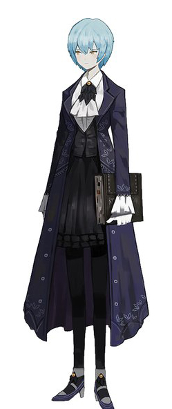
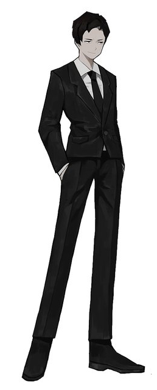
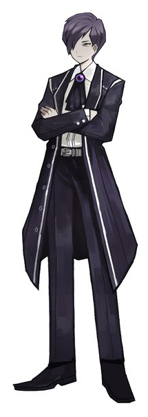
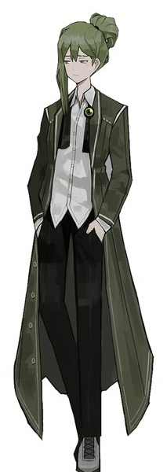
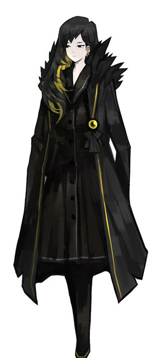

3. 성우진
라이브러리 오브 루이나는 풀보이스 게임이다. 하지만 롤랑의 성우를 제외하고는 목소리만 좋고 특색을 살리지 못하였다는 평가가 주를 이룬다.
실제로 목소리는 좋으니 특색이 있든없든 목소리만 좋으면 장땡이라는 사람들에겐 매우 좋을것이다.
샘플 보이스 링크. 롤랑은 공식적인 샘플 보이스가 없다.

앤젤라 - 성우 이다은

롤랑 - 성우 손수호
말쿠트 - 성우 이아름

예소드 - 성우 이인석

네짜흐 - 성우 이창민
호드 - 성우 김하루
티페리트 - 성우 손선영
게부라 - 성우 정유정
헤세드 - 성우 박요한

비나 - 성우 김보나
호크마 - 성우 이민규